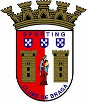

皇家马德里
皇家马德里足球俱乐部（Real Madrid CF），简称“皇马”，是一家位于西班牙首都马德里的足球俱乐部，球队成立于1902年3月6日，前称马德里足球队。1920年6月29日，时任西班牙国王阿方索十三世把"Real"（西语，皇家之意）一词加于俱乐部名前，徽章上加上了皇冠，以此来推动足球运动在西班牙首都马德里市的发展。从此，俱乐部正式名为皇家马德里足球俱乐部。
皇家马德里足球俱乐部拥有众多世界球星。2000年12月11日被国际足球联合会（FIFA）评为20世纪最伟大的球队。2009年9月10日被国际足球历史和统计联合会评为20世纪欧洲最佳俱乐部。
皇家马德里夺得过14次欧冠冠军（欧洲足坛第一）、35次西班牙足球甲级联赛冠军（西班牙第一）、20次西班牙国王杯冠军、12次西班牙超级杯冠军、5次欧洲超级杯冠军和7次俱乐部赛事世界冠军（其中国际足联俱乐部世界杯冠军5次，夺冠次数第一）。
那不勒斯
那不勒斯足球俱乐部（S.S.C. Napoli）是一家位于意大利那不勒斯的足球俱乐部，成立于1904年，首任主席为乔治·阿斯卡雷利。球队最初的名字是AC Napoli，1964年时改为SSC Napoli，现征战于意大利足球甲级联赛。
据统计，那不勒斯是球迷数量第4多的意大利足球俱乐部，排在尤文图斯、国际米兰和AC米兰之后。
布拉加体育
